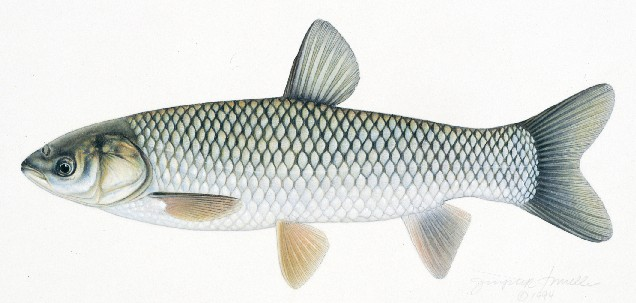

Nuốt mật cá trắm có thể tử vong

- Nhiều người sử dụng mật cá trắm để điều trị bệnh nhức mỏi, giảm thị lực, hen, mề đay... dưới hình thức nuốt sống trực tiếp hoặc pha trộn túi mật với nước, rượu,
mật ong. Theo Bộ Y tế, điều này là rất phản khoa học.
Những năm gần đây tại Việt Nam vẫn ghi nhận các trường hợp ngộ độc và tử vong do sử dụng mật cá trắm. Cá trắm chia thành hai loài. Cá trắm đen có mình và vây màu
xám đen, ăn tôm cá nhỏ. Cá trắm trắng có mình và vây màu xám nhạt, gần như trắng, ăn rong, cỏ.
Theo Hiệp hội thực phẩm chức năng Việt Nam, mật cá trắm chứa độc tố alcol steroid. Chất này gây viêm gan, viêm thận cấp. Khi bị ngộ độc mật cá trắm, người
bệnh có thể mắc các hội chứng sau:
- Rối loạn tiêu hóa, thời gian nung bệnh 2-3 giờ, sẽ có biểu hiện buồn nôn, nôn, tiêu chảy, đôi khi có máu, người mệt, chóng mặt vã mồi hôi.
- Viêm ống thận cấp với biểu hiện tiểu ít, tiến tới vô niệu, urê máu tăng, phù não, phổi, đái ra albumin, máu.
- Viêm gan cấp: Da và niêm mạc trở nên vàng, gan to, rối loạn chức năng khử độc và các chức năng khác.
Gặp phải những trường hợp này, nên xử trí bằng cách đào thải chất độc ra khỏi cơ thể với việc gây nôn sớm, rửa dạ dày, lọc màng bụng, điều chỉnh nước,
điện giải và muối, dùng các biện pháp hỗ trợ hô hấp, tim mạch.
Mức độ gây ảnh hưởng của mật cá trắm tới sức khỏe phụ thuộc vào liều lượng đưa vào cơ thể. Mật của cá trắm từ 3 kg trở lên chắc chắn gây ngộ độc, gây
viêm thận cấp và có thể dẫn đến tử vong sau 2 ngày nếu không được cấp cứu, điều trị kịp thời.
Đến nay chưa có tài liệu khoa học nào khẳng định việc nuốt mật cá có tác dụng chữa bệnh mà thực tế rất nhiều trường hợp nuốt mật cá đã tử vong. Để đảm
bảo sức khỏe cho cộng đồng, Cục An toàn thực phẩm vừa có văn bản khuyến cáo người dân tuyệt đối không sử dụng mật cá trắm dưới bất kỳ hình thức và mục đích nào.